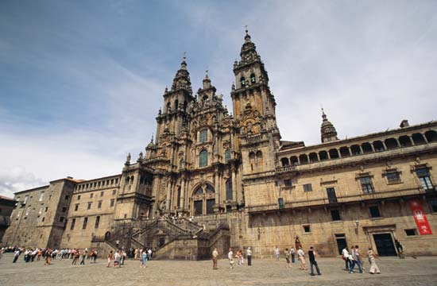
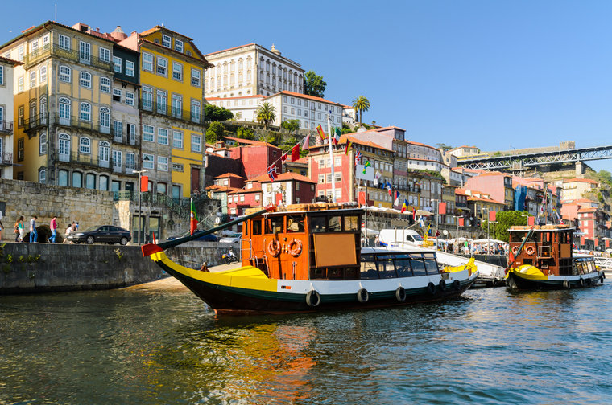
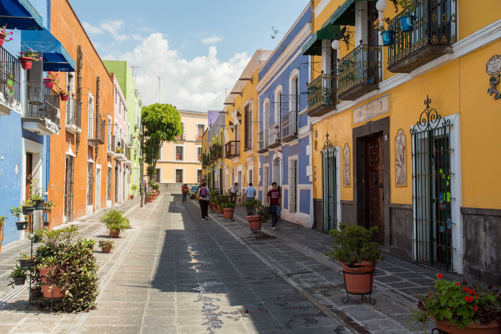
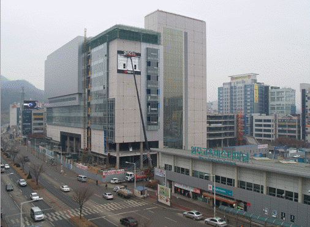
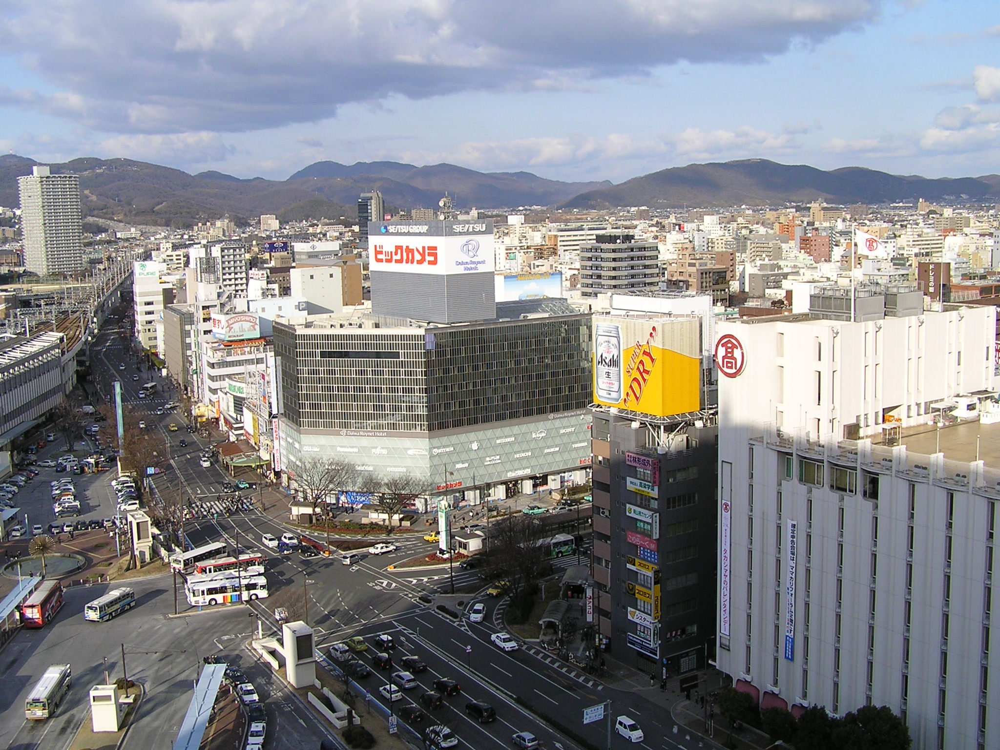
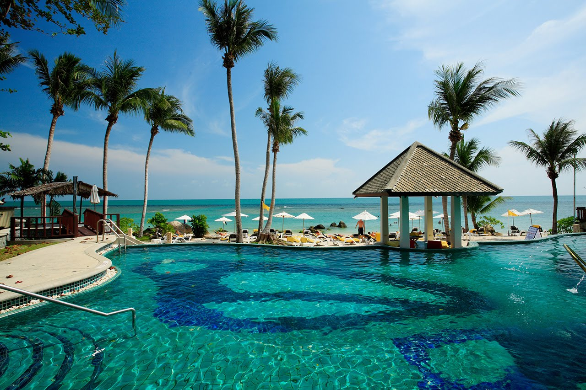

I grew up in St. Louis, MO, but ever since I visited Disney World as a little kid, I've always wanted to travel around the world and speak multiple languages.
Santiago De Compostela, Spain
When I was in college I decided that I didn't just want to graduate with a degree, but I also wanted to become fluent in foreign language. I worked with my University, and got the chance to study abroad in Santiago de Compostela, Spain.
Paris & Toulouse, France
While in Spain I traveled to Paris and Toulouse France with my friend from England, Rob. We decided to go to Toulouse because my uncle said the most beautiful women he'd ever seen were there. They were nice, but not magical.

Porto, Portugal
Since Portugal is so close to Spain, I ended up taking a road trip there with my German friends, Daniel and Tatjana, and my American friend, Letitia, who later on became my long time girfriend.
Puebla, Mexico
My present for graduating from university was an Apple Laptop and admission to an intensive Spanish Institute in Puebla, Mexico. I met amazing people there and we had such a good time!
Heyonri & Wonju, South Korea
Years later Letitia (from Spain) and I ended up dating. She asked me if I'd like to teach English abroad and I took her up on the idea. We called one of our other homeboys from Spain up, Todd, and he decided to go with us. I can't even express how much of my life changed because of the three years I spent in South Korea.
Okayama, Japan
A good friend of mine, Tyrone, ended up moving to Japan and marring a Japanese lady. I'd always wanted to visit Japan, and decided that being in Korea was the perfect opportunity to do so.
Koh Samui & Bangkok, Thailand
Letitia and I made a dream list together, and one of those dreams was to jetski in Thailand. Well, we got our dream and it was amazing!
Auckland, New Zealand
All during our time in Korea, Letitia wanted to return to medical school and ended up getting into a medical program in Auckland, New Zealand. She left Korea early, and I said that I'd join her after my contract was finished. And I did.
China is on deck, baby...